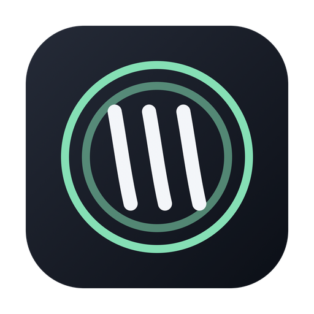
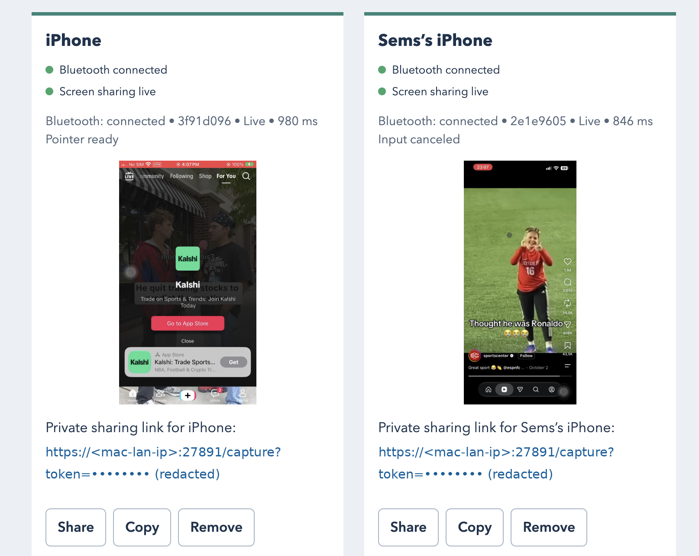

Install the CLI
Setup installs the managed runtime. Allow Bluetooth when the host asks.

Open iPhone UseOpen source · CLI · MCP
Connect multiple iPhones to an AI agent through a local CLI server. Bluetooth sends keyboard and pointer input; Safari shares each screen over Wi-Fi.
macOS app deprecated — use the CLI. Tested on macOS with iPhone; Windows and Linux backends have not been tested on real hardware. Reports and contributions welcome.

A real device, a real task
The agent searches Instagram for dinner recipes, opens a cooking reel, moves through the feed, and likes a video. Every action goes through MCP, Bluetooth HID, and the live screen stream.
Explore the source ↗The connection
Your host provides Bluetooth input and a private screen receiver; your MCP client brings the agent.
Closed loop: a fresh screenshot goes to the agent after actions, so it can check the result before moving on.
Start with what you own
Install and start the CLI, then open the web UI and pair each iPhone.
curl -fsSL https://raw.githubusercontent.com/semsturgut/open-iphone-use/main/install.sh | bashopen-iphone-use serveIt starts in the background and returns, printing a Web UI: link (a local http://127.0.0.1:… address). Open that link in your browser to use the web UI. Use open-iphone-use stop to stop the server.
curl -fsSL https://raw.githubusercontent.com/semsturgut/open-iphone-use/main/install.sh | bash -s -- --uninstallWindows: see Advanced installation.
Advanced installation ↗Setup installs the managed runtime. Allow Bluetooth when the host asks.
Turn on AssistiveTouch and pair Open iPhone Use from Bluetooth Devices.
Open the phone's private link in Safari, trust the local certificate, and start screen sharing. Share or Copy the link, or scan its QR.
Setup registers the CLI MCP server and skill for detected clients. Use an image-capable agent; the server does not need an AI API key.
Pointer preparation
Seven samples on the Safari board fit the visual pointer; a good fit is accepted immediately. The default auto-hiding AssistiveTouch pointer is supported.
Taps use bounded corrections and report observed, predicted or blind landings and whether they were verified. Predicted and blind landings are unverified: inspect the screen after every action. Recalibrate explicitly with ensure_session or prepare_session and recalibrate=true, or use Safari’s Calibrate pointer button.
Built for agent tools
Apple's iPhone Mirroring brings an iPhone to the Mac desktop. Open iPhone Use makes the screen and input available to MCP agents: a local Safari capture stream, Bluetooth keyboard and pointer, and standard tools your agent can call.
The project grows outward
Available CLI server · iPhone Safari capture · MCP
Implemented Linux and Windows HID backends; real hardware untested — reports and PRs welcome
Planned ESP32 HID support · no computer in use
Planned Raspberry Pi host · no Mac or PC in the setup
Implemented Independent devices, frames and HID routing